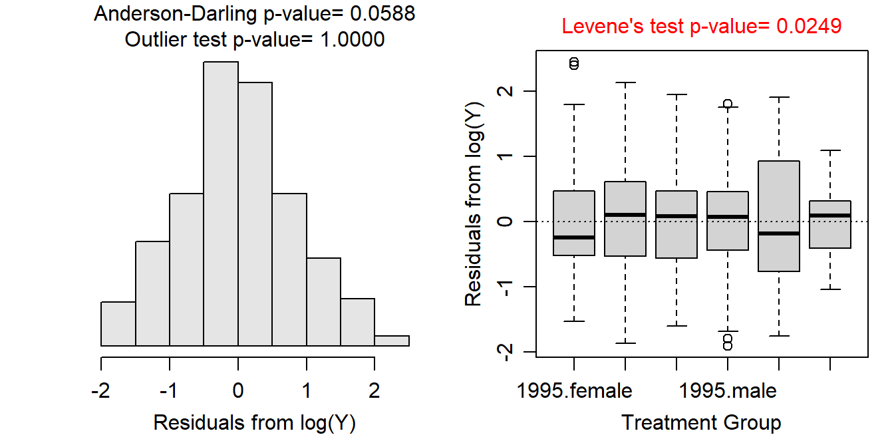
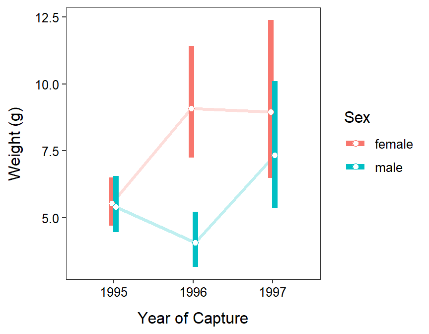

Exercise Key
Two-Way ANOVA Summary
Derek H. Ogle
- Refer to specific p-values and graphs when demonstrating that the assumptions are met.
- Use the ANOVA table p-value when testing for a difference in group means.
Ruffe Weight
- This study is not at all balanced as many different sample sizes of Ruffe were captured each year and of each sex (see
xtabs()results below). - There is among-year independence as each Ruffe was sacrificed upon captured. There is also between-sex independence as each Ruffe cannot be both male and female. However, there may be issues with within-year independence as many of the Ruffe were likely captured together in the same gear. Thus, if similar weighted Ruffe tend to congregate together and, thus, get captured together then that could be an issue. It is unlikely though that this is a big issue as Ruffe were captured at several times throughout the year. I will assume that the independence assumption has been adequately met.
- Variances among the treatments appear not to be constant (Levene’s p=0.0130) and the boxplots of residuals are quite divergent; the residuals do not appear to be approximately normally distributed and are quite right-skewed (Anderson-Darling p<0.00005); and there are significant outliers (outlier test p<0.00005). Clearly the assumptions are not met and a transformation should be considered.
- No transformation worked perfectly for these data. A log transformation still had unequal variances (Levene’s p=0.0249), but the boxplots of residuals are no longer wildly divergent; the residuals do appear to be approximately normally distributed (p=0.0588); and there are no longer any significant outliers (outlier test p>1). The hypothesis tests are likely very sensitive to slight departures from the assumptions as the sample size is quite large. Given this, I will assume that the assumptions adequately met on the log scale and continue to analyze the data with this transformation.
- There appears to be a significant interaction effect (p=0.0014); thus, the main effects cannot be interpreted directly from these results.
- Tukey’s multiple comparisons show that the mean log weight differed between female Ruffe in 1996 and 1997 (p=0.0069), female Ruffe in 1996 and male Ruffe in 1995 (p=0.0088), female Ruffe in 1996 and male Ruffe in 1996 (p=0.0001), female Ruffe in 1997 and male Ruffe in 1996 (p=0.0024), and male Ruffe in 1996 and 1997 (p=0.0493).
- The mean log weight of female Ruffe in 1996 was between 0.31 and 1.30 heavier than that of male Ruffe in 1996.
- The mean weight of female Ruffe in 1996 was between 1.36 and 3.66 times heavier than that of male Ruffe in 1996.
- The difference in mean log weight of female and male Ruffe in 1997 contains 0, which further indicates that these two groups do not have different mean log weights (i.e., a difference of 0 suggests that both values are the same).
- The ratio of back-transformed mean weights of female and male Ruffe in 1997 contains 1, which also further indicates that these two groups do not have different mean log weights (i.e., a ratio of 1 suggests that both values are the same).
- Mathematically e0=1. Thus, a difference of 0 (the exponent) back-transforms to a ratio of 1.
- The plot is shown below.
- The mean weight of Ruffe did not vary consistently among years and sexes. Female Ruffe were heavier in 1996 and 1997 than in 1995, on average, but male Ruffe were only slightly heavier in 1997 compared to 1996. Regardless, there is no evidence for a downward trend in weight of Ruffe, thus there is little evidence that a density-dependent effect had yet to affect this population of Ruffe.
R Code and Results
> ruf <- read.csv("http://derekogle.com/NCMTH207/modules/ce/data/Ruffe_Flag.csv")
> ruf <- filter(ruf,Sex!="unknown")
> ruf$Year <- factor(ruf$Year)
>
> lm1.ruf <- lm(Weight~Year+Sex+Year:Sex,data=ruf)
>
> xtabs(~Sex+Year,data=ruf) Year
Sex 1995 1996 1997
female 108 55 27
male 76 45 28> assumptionCheck(lm1.ruf)
> assumptionCheck(lm1.ruf,lambday=0)
> ruf$logWeight <- log(ruf$Weight)
> lm1.ruft <- lm(logWeight~Sex+Year+Sex:Year,data=ruf)
> anova(lm1.ruft)Analysis of Variance Table
Response: logWeight
Df Sum Sq Mean Sq F value Pr(>F)
Sex 1 5.797 5.7973 7.9147 0.005195
Year 2 7.618 3.8090 5.2002 0.005972
Sex:Year 2 9.817 4.9086 6.7014 0.001402
Residuals 333 243.913 0.7325 > mc1.ruft <- emmeans(lm1.ruft,specs=pairwise~Year:Sex,tran="log")
> ( mc1sum.ruft <- summary(mc1.ruft,infer=TRUE) )$emmeans
Year Sex emmean SE df lower.CL upper.CL t.ratio p.value
1995 female 1.71 0.0824 333 1.55 1.87 20.762 <.0001
1996 female 2.21 0.1154 333 1.98 2.43 19.117 <.0001
1997 female 2.19 0.1647 333 1.87 2.52 13.310 <.0001
1995 male 1.69 0.0982 333 1.49 1.88 17.180 <.0001
1996 male 1.40 0.1276 333 1.15 1.65 10.993 <.0001
1997 male 1.99 0.1617 333 1.68 2.31 12.329 <.0001
Results are given on the log (not the response) scale.
Confidence level used: 0.95
$contrasts
contrast estimate SE df lower.CL upper.CL t.ratio p.value
1995 female - 1996 female -0.4963 0.142 333 -0.9027 -0.08994 -3.501 0.0069
1995 female - 1997 female -0.4824 0.184 333 -1.0102 0.04546 -2.620 0.0954
1995 female - 1995 male 0.0232 0.128 333 -0.3441 0.39055 0.181 1.0000
1995 female - 1996 male 0.3073 0.152 333 -0.1280 0.74259 2.024 0.3310
1995 female - 1997 male -0.2842 0.181 333 -0.8045 0.23602 -1.566 0.6216
1996 female - 1997 female 0.0139 0.201 333 -0.5625 0.59040 0.069 1.0000
1996 female - 1995 male 0.5196 0.152 333 0.0853 0.95385 3.429 0.0088
1996 female - 1996 male 0.8036 0.172 333 0.3105 1.29674 4.671 0.0001
1996 female - 1997 male 0.2121 0.199 333 -0.3574 0.78160 1.067 0.8940
1997 female - 1995 male 0.5056 0.192 333 -0.0440 1.05524 2.637 0.0914
1997 female - 1996 male 0.7897 0.208 333 0.1925 1.38688 3.790 0.0024
1997 female - 1997 male 0.1981 0.231 333 -0.4635 0.85983 0.858 0.9560
1995 male - 1996 male 0.2841 0.161 333 -0.1774 0.74550 1.765 0.4902
1995 male - 1997 male -0.3075 0.189 333 -0.8498 0.23485 -1.625 0.5825
1996 male - 1997 male -0.5915 0.206 333 -1.1820 -0.00106 -2.872 0.0493
Results are given on the log (not the response) scale.
Confidence level used: 0.95
Conf-level adjustment: tukey method for comparing a family of 6 estimates
P value adjustment: tukey method for comparing a family of 6 estimates > ( mc1sum.rufbt <- summary(mc1.ruft,infer=TRUE,type="response") )$emmeans
Year Sex response SE df lower.CL upper.CL t.ratio p.value
1995 female 5.53 0.455 333 4.70 6.50 20.762 <.0001
1996 female 9.08 1.048 333 7.24 11.40 19.117 <.0001
1997 female 8.96 1.475 333 6.48 12.38 13.310 <.0001
1995 male 5.40 0.530 333 4.45 6.55 17.180 <.0001
1996 male 4.07 0.519 333 3.16 5.23 10.993 <.0001
1997 male 7.35 1.188 333 5.34 10.10 12.329 <.0001
Confidence level used: 0.95
Intervals are back-transformed from the log scale
Tests are performed on the log scale
$contrasts
contrast ratio SE df lower.CL upper.CL t.ratio p.value
1995 female / 1996 female 0.609 0.0863 333 0.405 0.914 -3.501 0.0069
1995 female / 1997 female 0.617 0.1137 333 0.364 1.047 -2.620 0.0954
1995 female / 1995 male 1.024 0.1312 333 0.709 1.478 0.181 1.0000
1995 female / 1996 male 1.360 0.2065 333 0.880 2.101 2.024 0.3310
1995 female / 1997 male 0.753 0.1366 333 0.447 1.266 -1.566 0.6216
1996 female / 1997 female 1.014 0.2039 333 0.570 1.805 0.069 1.0000
1996 female / 1995 male 1.681 0.2547 333 1.089 2.596 3.429 0.0088
1996 female / 1996 male 2.234 0.3843 333 1.364 3.657 4.671 0.0001
1996 female / 1997 male 1.236 0.2456 333 0.699 2.185 1.067 0.8940
1997 female / 1995 male 1.658 0.3179 333 0.957 2.873 2.637 0.0914
1997 female / 1996 male 2.203 0.4589 333 1.212 4.002 3.790 0.0024
1997 female / 1997 male 1.219 0.2814 333 0.629 2.363 0.858 0.9560
1995 male / 1996 male 1.329 0.2139 333 0.837 2.108 1.765 0.4902
1995 male / 1997 male 0.735 0.1391 333 0.427 1.265 -1.625 0.5825
1996 male / 1997 male 0.553 0.1140 333 0.307 0.999 -2.872 0.0493
Confidence level used: 0.95
Conf-level adjustment: tukey method for comparing a family of 6 estimates
Intervals are back-transformed from the log scale
P value adjustment: tukey method for comparing a family of 6 estimates
Tests are performed on the log scale > pd <- position_dodge(width=0.1)
> ggplot(data=mc1sum.rufbt$emmeans,
mapping=aes(x=Year,group=Sex,color=Sex,
y=response,ymin=lower.CL,ymax=upper.CL)) +
geom_line(position=pd,size=1.1,alpha=0.25) +
geom_errorbar(position=pd,size=2,width=0) +
geom_point(position=pd,size=2,pch=21,fill="white") +
labs(y="Weight (g)",x="Year of Capture") +
theme_NCStats()